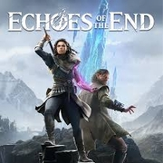

Echoes of the End
Detalles
 |
|
| Tiempo de juego | No Jugado |
| Última actividad | Nunca |
| Añadido | 26/08/2025 22:18:05 |
| Modificado | 01/09/2025 13:29:32 |
| Estado de finalización | Not Played |
| Librería | Playnite |
| Fuente | 6TB STORE |
| Plataforma | PC (Windows) |
| Fecha de lanzamiento | |
| Puntuación de la Comunidad | 64 |
| Puntuación de la Crítica | |
| Puntuación de usuario | |
| Género | Acción Aventura |
| Desarrollador | Myrkur Games |
| Editor | Deep Silver |
| Característica | Cloud Saves Compat. Parcial Con Mando Logros De Préstamo Familiar Un Jugador |
| Enlaces | Punto de encuentro Discusiones Guías Noticias Página de la tienda PCGamingWiki Logros |
| Tag | Acción Acción y aventura Ambientales Aventura Buena trama Combate Emocionales Espadas Estilizados Fantasía Inmersivo LGBTQ+ Magia Misterio Plataformas de puzles Protagonista femenina Realistas Tercera persona Un jugador Violentos |
Descripción

Echoes of the End es una aventura cinemática en tercera persona. Combina una historia íntima centrada en los personajes con magia fascinante, combate con espada, exploración dinámica y puzles desafiantes. Esta aventura épica, inspirada en Islandia, ofrece una experiencia madura e inmersiva en un mundo de fantasía impresionante y único.


Ponte en la piel de Ryn, un vestigio con magia inestable pero poderosa, mientras lucha por salvar a su hermano de un cruel imperio totalitario. Únete a Abram Finlay, un erudito y explorador atormentado por su pasado, para desvelar una conspiración que podría reavivar un antiguo conflicto y sumir a Aema en el caos. Vive una conmovedora historia de confianza, redención y sacrificio en un mundo al borde de la guerra.


• Domina la magia y la esgrima de Ryn para derrotar enemigos únicos y jefes en batallas épicas.
• Domina una amplia variedad de poderes mientras la fuerza y la confianza de Ryn crecen a lo largo de su viaje.
• Únete a Abram para combinar vuestras capacidades de combate y exploración, desatando combos e interacciones creativas.
• Explora impresionantes paisajes inspirados en Islandia, desde campos de lava hasta picos helados.


• Resuelve puzles desafiantes usando los poderes de Ryn, como manipulación de gravedad, destrucción e ilusiones, y trabajando con tu compañero.
• Recorre el mundo con diversas mecánicas de desplazamiento, como el doble salto, el deslizamiento y el control de gravedad. Cada capítulo ofrece desafíos nuevos y únicos.


• Echoes of the End sumerge a los jugadores en un mundo de fantasía único, realista y lleno de detalles.
• Esta aventura centrada en los personajes incluye actuaciones con captura de movimiento, modelos de personajes detallados y entornos impresionantes, ofreciendo una experiencia inolvidable y conmovedora.
• Explora la historia secreta de Aema, forja lazos irrompibles y acepta tu potencial mágico mientras decides el destino de una nación.